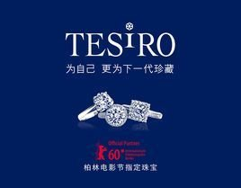
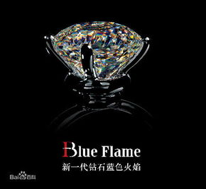
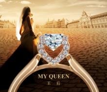
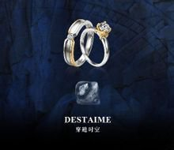
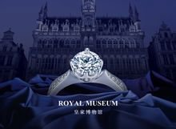
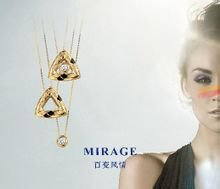
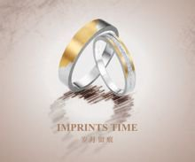
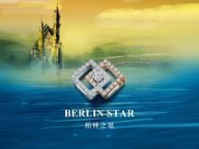

-
传世之作
明星"红毯"系列
作为柏林电影节指定珠宝，TESIRO通灵每年为出席电影节的明星们专门定制珠宝。现在，TESIRO愿将"红毯"系列所引领的高端风尚带到您的身边，下面我们将为您提供符合您独特风格与身份的高端定制珠宝！
- 
-
独家发售
蓝色火焰钻石
新一代钻石蓝色火焰，拥有89切面，它将钻石角度比例和棱边的对称性充分发挥，使钻石充分释放各角度射入的光芒，在聚光灯的直射下，通体焕发动人心魄的璀璨光芒,它作为比利时跨越近百年的钻石切工革命性技艺成果，在上海世博会比利时欧盟馆展出，其中最大一颗重达4克拉。
- 
经典系列
-
MY QUEEN(王后)系列
该系列旨在为有结婚、订婚及结婚纪念需求的顾客打造完美婚礼钻饰，记录人生特别时刻，守护永恒爱情
结婚钻饰MY QUEEN(王后)系列是由比利时国王和王后共同发布的结婚钻饰。其作品采用独特的心型镶口设计，360度展示钻石火彩。两个心型爪托，与托起的钻石，形成镂空的心型镶口，寓意"两颗心对爱情的永恒守护"。
- 
-
DESTAIME(穿越时空)系列
DESTAIME(穿越时空)系列的每一对同坯钻石，均刻有相同的唯一编号，独特的同坯身份印记，是其天生一对的见证
通灵珠宝结婚对戒DESTAIME(穿越时空)系列,是一名具有10年以上切工经验的资深技师，恪守原则，鉴优淘劣，经过不少于200次的精确测量和计算，严格按照特定的切割比例挑选，百中取一，花费2倍于普通钻石切割的工作周期，才切割出的比例完美、熠熠生辉的两颗"同坯美钻"。
- 
-
皇家博物馆系列
通灵珠宝高端典藏皇家博物馆系列是通灵珠宝系列化产品之一，她是为庆祝和纪念比利时MAS博物馆盛大开馆，特别设计创作的典藏级作品
该系列秉承了550年钻石技艺不断设计研发出欧洲纯手工工艺的珠宝，体现了博物馆精髓的杰作，具有收藏、投资价值的珠宝作品。为中国消费者带来一次具有深度历史感和奢华感的颠覆性珠宝佩戴体验，在钻石华彩中感受精致与典雅。
- 
-
MIRAGE(百变风情)系列
时尚钻坠"百变风情"系列是女性对自我宠爱的嘉奖，从戴上"百变风情"的一瞬间，便开启了一个更美好的未来。
通灵珠宝MIRAGE(百变风情)系列，由意大利著名珠宝设计师安德烈倾力打造，为满足她们百变搭配的需求而设计，以其唯美、清新的自然风情，为年轻女性打造"百变臻美，如花绽放"的魅力。
- 
-
ONLY YOU(非你莫属)系列
ONLY YOU(非你莫属)系列是情侣间表达爱意的定情饰品。
该作品男女款式造型相同，但可通过佩戴方式的变化表达不同含义。"非你莫属"系列，是给予对方 "非你莫属" 承诺的最佳选择。
-
IMPRINTS TIME(岁月留痕)系列
通灵珠宝创意设计IMPRINTS TIME(岁月留痕)系列，拥有独一无二的"三层蜕变专利"，让戒指颜色会随着佩戴时间经历三层蜕变。
戒指颜色蜕变的第一层代表初见，第二层代表磨合，第三层代表厮守，戒指颜色的变化过程，记录两个人携手走过的一生。
- 
-
BERLIN STAR(柏林之星)系列
通灵珠宝"BERLIN STAR(柏林之星)"系列，其设计灵感来源于柏林电影节元素。
BERLIN STAR(柏林之星)系列由电影节主席Dieter结合欧洲文化元素跨界创意设计，饰品融合了德国艺术文化印记和珠宝表现艺术，表达艺术闪耀生活的理念。
- 